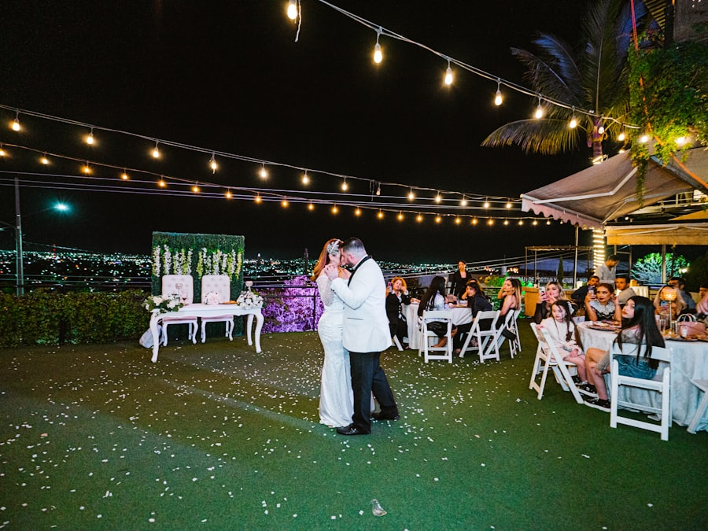
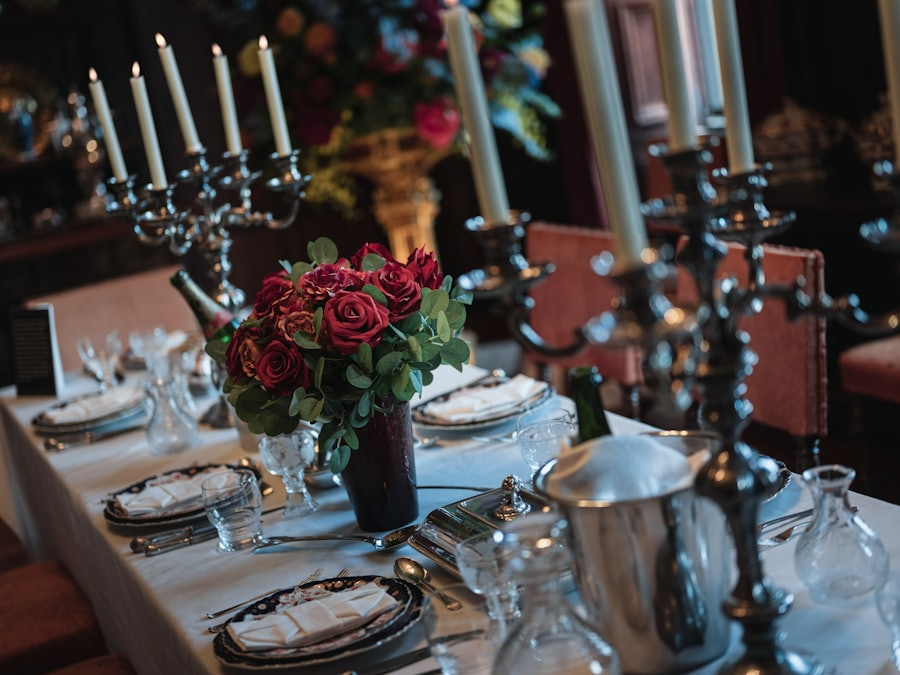
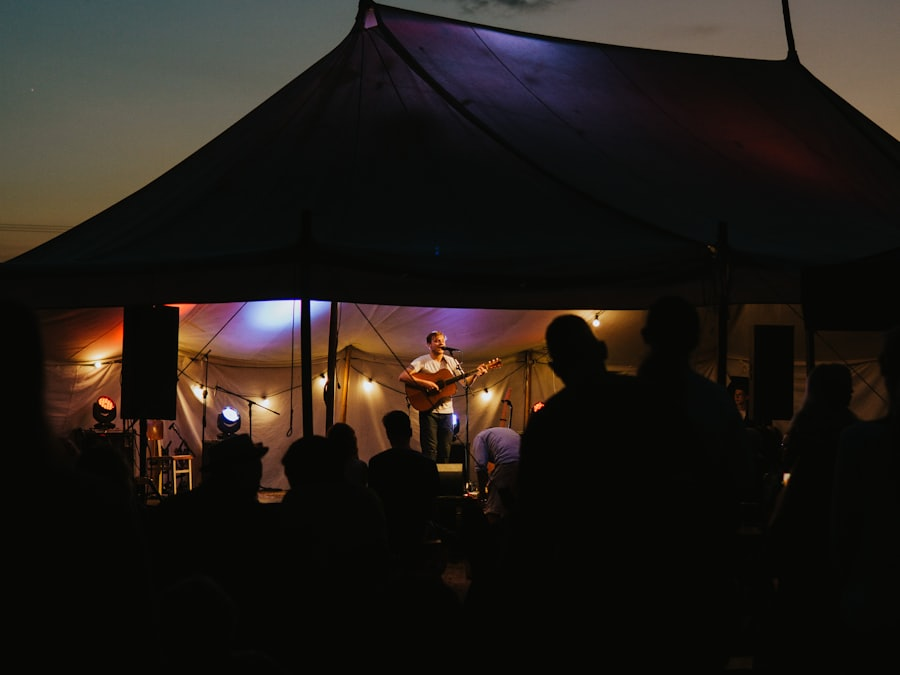
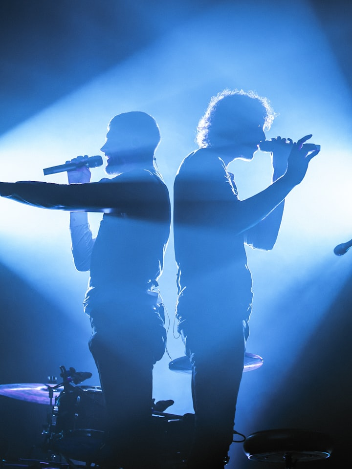
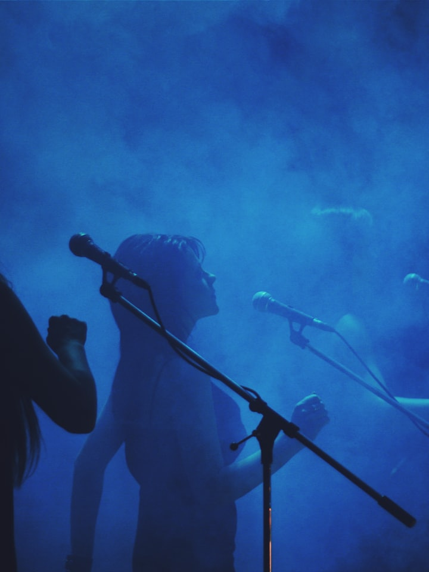

DJ
Der volle PopAlpin-Sound aus einer Hand — kompakt, flexibel, mit Gespür für den Moment.
Passt zu: kleineren Feiern & Aftershow
Als DJ anfragen →Liveband für Hochzeiten & Events
30 Jahre Bühnenerfahrung, über 500 Events — und immer das richtige Lied zur richtigen Zeit. Von der emotionalen Hochzeit bis zum bebenden Festzelt.
Die richtige Band für jeden Moment
Vom Eröffnungstanz bis zur Party-Eskalation: PopAlpin liefert das passende Set für Ihr Event — persönlich vorbereitet, für alle Generationen.

BeispielfotoVom Eröffnungstanz bis zur vollen Tanzfläche — der emotionale Höhepunkt Ihres Tages.
Termin anfragen →
BeispielfotoDezente Tischmusik, dann glamouröser Party-Mix — stilsicher für höchste Ansprüche.
Termin anfragen →Wir treffen den Nerv Ihrer Gäste — persönlich vorbereitet, für alle Generationen.
Termin anfragen →Maximale Energie für die fünfte Jahreszeit — wir bringen den Saal zum Kochen.
Termin anfragen →
BeispielfotoBebende Stimmung und pure Leidenschaft — Ihre Gäste sicher auf den Bänken.
Termin anfragen →Der Publikumsmagnet für Ihr Fest — wir liefern die Energie, die es zum Erfolg macht.
Termin anfragen →Weltweit gebucht
Wer im Hofbräuhaus in Las Vegas die Massen zum Toben bringt und in Schweizer Sterne-Hotels für Glanz sorgt, überlässt auf Ihrem Event nichts dem Zufall. (Angaben der Band)
Maßgeschneiderte Besetzung
Ob als DJ, stimmungsvolles Duo, Trio oder mit kompletter Band-Power: PopAlpin passt sich Ihrer Eventgröße und Ihrem Budget an — inklusive professioneller Ton- & Lichttechnik.
Der volle PopAlpin-Sound aus einer Hand — kompakt, flexibel, mit Gespür für den Moment.
Passt zu: kleineren Feiern & Aftershow
Als DJ anfragen →
BeispielfotoDas stimmungsvolle Kern-Format: zwei Vollblutmusiker, Gesang und Entertainment mit Herz.
Passt zu: Hochzeiten & Geburtstagen
Als Duo anfragen →
BeispielfotoMehr Stimmen, mehr Instrumente, mehr Dynamik — die goldene Mitte für volle Säle.
Passt zu: Gala-Abenden & Vereinsfesten
Als Trio anfragen →Die volle Band-Power für große Bühnen — wenn das Festzelt beben soll.
Passt zu: Festzelten & Fastnacht
Als Band anfragen →Live erleben
Öffentliche Auftritte sind die beste Hörprobe: vorbeikommen, mitfeiern, selbst überzeugen.
Beispiel-Tourplan zur Veranschaulichung — echte Termine folgen nach Freigabe
Sa12. Sep
Festzelt Musikverein — Beispieltermin
Sa26. Sep
Privates Event — Beispieltermin
Sa10. Okt
Herbstfest — Beispieltermin
Sa07. Nov
Hotel-Gala — Beispieltermin
Sa13. Feb
Fastnachts-Saison — Beispieltermin
Alle Einträge sind Platzhalter dieser Konzeptvorschau. Im echten Betrieb pflegt die Band hier ihre öffentlichen Auftritte — und jeder freie Samstag wird zur Buchungschance.
30+
Jahre Bühnenerfahrung
500+
Erfolgreiche Auftritte
100 %
Zufriedene Auftraggeber
Angaben der Band (Stand der bestehenden Website).
Repertoire
Von zeitlosen Oldies und Schlager-Klassikern bis zu aktuellen Chart-Breakern und Rock-Hymnen — für jeden Gast der richtige Beat.
Titel-Auswahl von der bestehenden Website. Hörproben gibt es dort und auf Anfrage — diese Konzeptvorschau spielt bewusst keine Audiodateien ab. Ihr Wunschsong oder Hochzeitstanz wird nach Absprache individuell einstudiert.
Sechs gute Gründe
Oldies, Schlager, Charts, Rock-Hymnen — für jeden Gast der richtige Beat im Gepäck.
Wir feiern nicht nur vor, sondern mit Ihren Gästen — Fingerspitzengefühl für jede Generation.
DJ, Duo, Trio oder komplette Band — perfekt angepasst an Eventgröße und Budget.
Brillanter Klang und atmosphärisches Licht, inklusive Full-Service für Ihre eigenen Beiträge.
Ihr Wunschsong oder der perfekte Hochzeitstanz — nach Absprache individuell einstudiert.
Minimale Pausen, perfekter Flow — eine Tanzfläche, die niemals leer wird.
Kundenstimmen
Absolute Powerband von der ersten Minute an. Reißt das Publikum sofort mit. Sehr zu empfehlen für Jung und Alt.
Von der ersten Minute an beste Stimmung, die Tanzfläche war durchgehend voll. Von Schlager über Rock und Pop bis zu echten Partyklassikern — wirklich jeder kam auf seine Kosten.
Benefiz-Projekt
Für die Tractor Cowboys — fünf Freunde, die im September 2026 mit Oldtimer-Traktoren die komplette Route 66 fahren und dabei Spenden für Kinder in Not sammeln — hat PopAlpin einen eigenen Song geschrieben und produziert: Text, Melodie und Arrangement komplett selbst, die Kosten hat die Band vollständig getragen.
Es gibt ihn in einer englischen und einer Mundart-Version — auf allen gängigen Streaming-Plattformen und über QR-Codes entlang der Tour.
Inhalt von der bestehenden Website übernommen; die vollständige Projektseite ist nicht Teil dieser Konzeptvorschau.